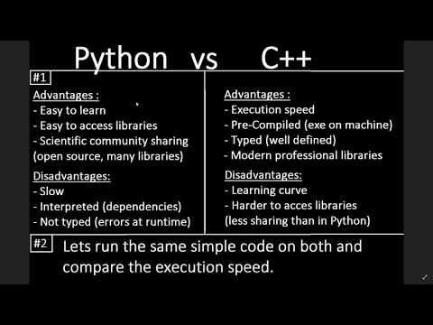

Python is a language with a simple grammar structure that is easy to learn and understand. However, depending on the learning goals we should or should not choose to learn this language.
Who should learn Python
If you are interested in software development to run oncomputer
With Python, you can easily create applications that run on your computer, from as simple as finding a file on your hard drive, to complex software like editing photos, creating mp4 videos from snapshots.
Python supports fast processing from data files such as excel, json to popular audio and video files, so if you want to create software to improve and improve productivity, Python is a wise choice.

If you are interested in artificial intelligence development - Deep Learning
Deep Learning, is a technique in which computers automatically create structures through self-analyzing large amounts of data over and over to find the underlying patterns and then self-learning it. Through that, the computer will create AI capable of simulating the “” functions similar to the learning ability “that people naturally perform.
There are many languages that can be used in Deep Learning techniques, but with its huge data processing advantage, Python is currently at the top of the languages used in this field.

If you are interested in AI, then learn Python, because Python has many integrated libraries used for research and development of deep learning.
In addition, with a simple grammar structure, you can call and use these libraries very simply, so it is easy to master and saves learning time.
If you are interested in data analysis
Today, almost every business uses databases, and with an increasingly large amount of stored information, has formed Big Data - huge data warehouses, for example Google or Facebook.
Of course, regardless of the opportunity to work with Big Data in large enterprises, if you are working in a small business, you will definitely have to work with databases, for example, customer information. goods or products for example. And if you are having trouble analyzing these data, then Python is your choice.
Python, with its typical library Pandas, helps you perform commands such as reading CSV file information, then add, edit, delete and analyze them easily and efficiently.
Pandas (source: https://pythonawesome.com/)
Who should not learn Python
If you want to create a smartphone app (iPhone, Android)
Of course you can use Python to create mobile apps, but if the numbers match Swift’s iPhone or Android’s Java, and more recently, Kotlin, Python has no advantage in the field. this.
Furthermore, the information on how to create applications with Python is very limited, so if you really want to use Python in this case it will be very difficult and time consuming.

If you want to develop web apps and services
Python is a very popular language, so the developers created the following three web frameworks written in python as well.
- Django
- Flask
- Bottle
Kiyoshi has not worked in Vietnam yet so he is not sure about the situation of using these frameworks, but in Japan, almost all web creation projects are written by Ruby and PHP. Therefore, python has the potential but has not been used as much as a main language to create web pages, but is mainly used to manage website data.
If you want to develop Embedded System / Application
Python is a language that can run on most popular operating systems today. And since it is not OS dependent, Python can be used for developing large systems, or for creating embedded applications for use in other systems.
However, because it is an interpreter - the translation of python into a language understood by the computer, and the execution of the task in parallel, the speed of python in the system will not be comparable. with other common languages being used such as C / C ++.

Summary
In this article we have explored whether to learn python already. Although in some areas, Python has not fully developed its capabilities, but Kiyoshi believes that with the love that programmers have for it, Python will be increasingly improved and overcome.
And as a language with a simple structure, easy to learn, Python will always be one of the top choices for those looking to start learning about programming.
HOME>> python for beginners>>introducing python


{kind=link}